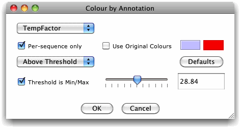
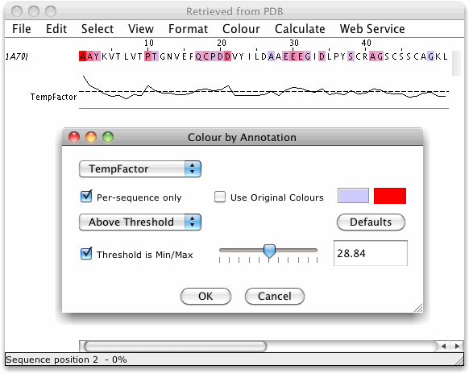

Annotation Colouring
Jalview allows the columns of an alignment to be coloured using
any numerical annotation rows added to that alignment.
Select "Colour"
→ ".. by Annotation" to bring up the
Colour by Annotation settings window.

- Select which annotation to base the colouring scheme on
using the top left selection box. Sequence associated alignment
annotation are shown with the seuqence's name appended.
If
the Per-sequence only tick box is not greyed out,
then ticking it will limit the list of available annotation rows
to just the labels for those that are sequence associated.
Annotation rows on each sequence with the same label (e.g.
T-COFFEE scores and protein
disorder predictions) will then be used to colour its
corresponding positions in the alignment.
Per-sequence
associated annotation colouring is currently only available in
the Desktop.
- If the "Use Original Colours" box is selected,
the colouring scheme will use the colouring scheme present on the
alignment before the Annotation Colour Settings window was
displayed.
Please Note: If no
colour scheme was applied previously, then the colours for lines
and labels at each position in the annotation row will be used,
for secondary structure symbols and graphs, this may be black by
default, so your alignment will be coloured black.
- Secondary structure annotation colouring
By
default, Jalview will employ the helix or sheet colours to shade
sequences and columns by available secondary structure annotation
tracks. In the case of RNA, each structure is processed to
identify distinct RNA helices and rendered in the same way as the
RNA Helices shading scheme.
Structure based sequence shading was added in Jalview
2.8.2
- The colour scheme can display a colour gradient from a
colour representing the minimum value in the selected annotation
to a colour representing the maximum value in the selected
annotation. Use the "Min Colour" and "Max
Colour" to set the colour gradient range.
- Press the "Defaults" button to reset the
minimum and maximum colours to their default settings (these
are configured in the applet's parameters or the application's
user preferences.).
Default min and max
colours were introduced in Jalview 2.7
- Select whether to colour the alignment above or below an
adjustable threshold with the selection box center left of the
window.
- Change the threshold value with the slider, or enter the
exact value in the text box.
- Select the "Threshold is Min/Max" checkbox to
assign colours using the thresholded range's minimum and maximum
values, otherwise the scale will be defined by the range of values
in the annotation row.
